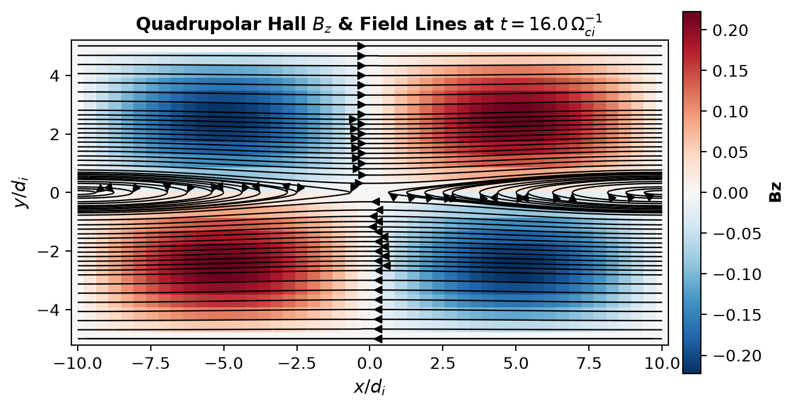
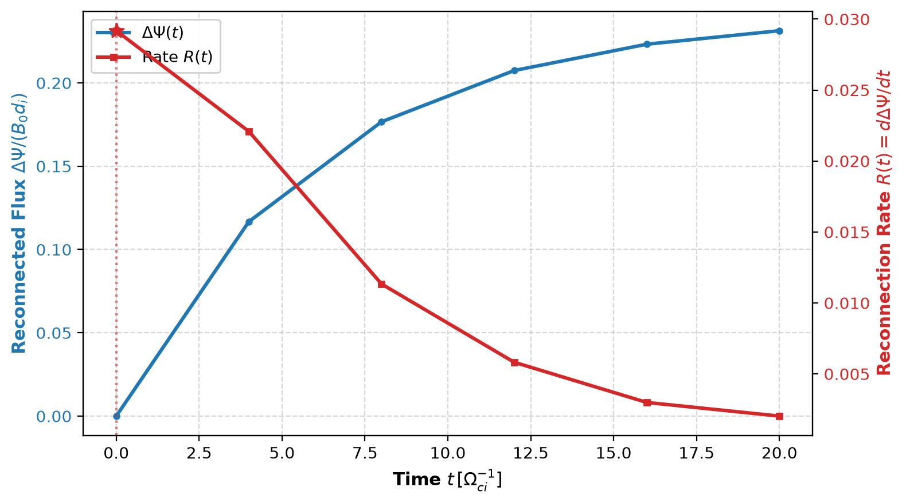
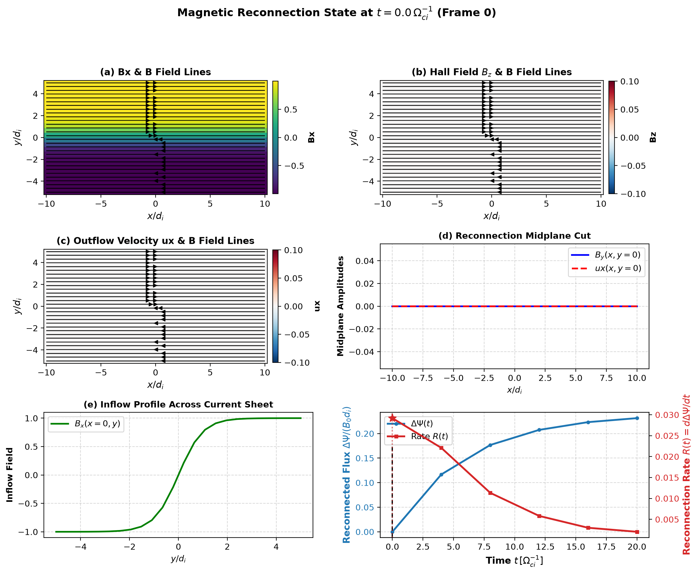
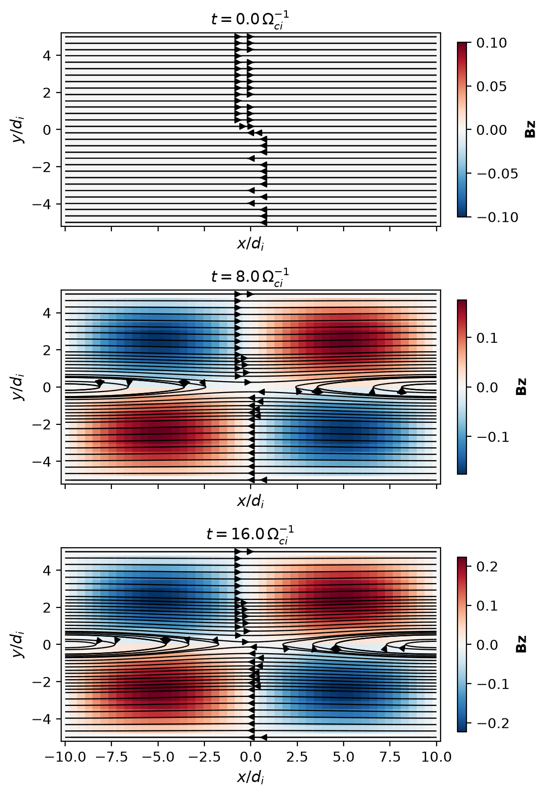

Magnetic Reconnection Analysis with flekspy#
This notebook demonstrates how to analyze magnetic reconnection simulations using flekspy.
Capabilities covered:#
Vector Potential \(A_z(x, y)\): Conservative 2D path integration from the central column outward such that \(\mathbf{B} = \nabla \times (A_z \hat{\mathbf{z}})\).
Reconnected Flux \(\Delta\Psi(t)\) & Reconnection Rate \(R(t)\): Evaluated from midplane magnetic flux or vector potential.
ReconnectionSeriesContainer: Fast header scanning, lazy loading with LRU cache, and single-pass metrics extraction for time series.xarrayDataset Accessor: Seamless integration viads.reconnection.Publication-Grade Visualizations: Continuous magnetic field streamlines with directional arrows via
flekspy.plot.streamplot.
Full-scale kinetic or Hall-MHD reconnection runs typically produce gigabytes of output. In this notebook, we generate a compact sequence of synthetic snapshots to showcase the complete analysis workflow without requiring external downloads.
1. Imports and Setup#
import tempfile
from pathlib import Path
import matplotlib.pyplot as plt
import numpy as np
import xarray as xr
import flekspy as fs
import flekspy.reconnection as reconn
# Configure display options
xr.set_options(display_expand_coords=False, display_expand_data=False)
plt.rcParams["figure.dpi"] = 120
2. Generating Synthetic Reconnection Snapshots#
We construct a sequence of snapshots simulating the physical stages of magnetic reconnection:
An initial Harris current sheet: \(B_x(y) = B_0 \tanh(y/L)\)
An island perturbation that grows over time: \(b_1(t)\)
The characteristic out-of-plane quadrupolar Hall magnetic field \(B_z(x, y)\)
Bipolar reconnection outflow jets \(u_x(x, y)\)
Each snapshot is saved as a standard IDL ASCII output file (.out).
temp_dir = tempfile.TemporaryDirectory()
data_dir = Path(temp_dir.name)
nx, ny = 48, 24
Lx, Ly = 20.0, 10.0
x = np.linspace(-Lx / 2, Lx / 2, nx)
y = np.linspace(-Ly / 2, Ly / 2, ny)
# Generate 6 time snapshots showing island growth
times = [0.0, 4.0, 8.0, 12.0, 16.0, 20.0]
file_paths = []
for i, t in enumerate(times):
# Reconnection perturbation amplitude grows and then saturates
amp = 0.12 * (1.0 - np.exp(-t / 6.0))
fpath = data_dir / f"z=0_var_t{t:05.1f}_n{i*200:04d}.out"
lines = [
"PIC unit",
f"{i * 200} {t:.4f} 2 0 6",
f"{nx} {ny}",
"x y Bx By Bz ux"
]
for j_idx in range(ny):
for i_idx in range(nx):
xi = x[i_idx]
yj = y[j_idx]
bx_val = np.tanh(yj) - amp * (np.pi / Ly) * np.cos(2 * np.pi * xi / Lx) * np.sin(np.pi * yj / Ly)
by_val = amp * (2 * np.pi / Lx) * np.sin(2 * np.pi * xi / Lx) * np.cos(np.pi * yj / Ly)
bz_val = 0.25 * amp * 8.0 * np.sin(2 * np.pi * xi / Lx) * np.sin(2 * np.pi * yj / Ly)
ux_val = 0.5 * (amp / 0.12) * np.sin(2 * np.pi * xi / Lx) * np.exp(-(yj / 1.5)**2)
lines.append(f"{xi:.5e} {yj:.5e} {bx_val:.5e} {by_val:.5e} {bz_val:.5e} {ux_val:.5e}")
fpath.write_text("\n".join(lines) + "\n")
file_paths.append(str(fpath))
print(f"Generated {len(file_paths)} synthetic snapshots in {data_dir}")
Generated 6 synthetic snapshots in /tmp/tmpa8uxcp9e
3. Single-Snapshot Analysis and Xarray Accessor#
flekspy registers an xarray accessor ds.reconnection on every 2D dataset loaded with read_idl or load.
Let’s load the snapshot near peak reconnection (\(t = 16.0\)) and inspect the accessor capabilities:
ds_peak = fs.read_idl(file_paths[4])
print(f"Loaded frame at t = {ds_peak.attrs['time']:.1f} with dimensions: {dict(ds_peak.sizes)}")
# 1. Calculate 2D magnetic vector potential Az(x, y)
az = ds_peak.reconnection.calc_vector_potential()
print(f"Vector potential Az computed: shape = {az.shape}, range = [{az.min().item():.3f}, {az.max().item():.3f}]")
# 2. Calculate reconnected magnetic flux Delta Psi
flux_mid = ds_peak.reconnection.reconnected_flux(method="midplane")
flux_az = ds_peak.reconnection.reconnected_flux(method="az")
print(f"Reconnected flux (midplane integral): {flux_mid:.4f}")
print(f"Reconnected flux (vector potential): {flux_az:.4f}")
Loaded frame at t = 16.0 with dimensions: {'x': 48, 'y': 24}
Vector potential Az computed: shape = (48, 24), range = [-4.380, 0.000]
Reconnected flux (midplane integral): 0.2232
Reconnected flux (vector potential): 0.2222
2D Slice with Continuous Field Lines and Directional Arrows#
plot_2d_slice combines the scalar background field (such as the Hall field \(B_z\) or outflow \(u_x\)) with continuous magnetic streamlines that include directional arrowheads:
fig, ax = ds_peak.reconnection.plot_slice(
var="Bz",
stream_field="B",
stream_density=1.1,
title=r"Quadrupolar Hall $B_z$ & Field Lines at $t = 16.0 \, \Omega_{ci}^{-1}$",
)
plt.show()

4. Multi-Frame Analysis with ReconnectionSeries#
ReconnectionSeries inherits from IDLSeries, which provides fast header pre-scanning and lazy on-demand loading with an LRU cache (max_cache=32 by default).
It automatically extracts the time series of:
Reconnected flux \(\Delta\Psi(t)\)
Reconnection rate \(R(t) = d\Delta\Psi/dt\)
Peak quadrupolar Hall field \(\max(|B_z|)\)
Peak outflow velocity \(\max(|u_x|)\)
series = fs.ReconnectionSeries(f"{data_dir}/*.out", max_cache=4)
print(series)
# Summary dictionary
summary = series.summary()
print("\nReconnection Summary:")
for key, val in summary.items():
print(f" {key}: {val}")
<ReconnectionSeries: 6 frames, t=[0.00, 20.00], grid=[48 24], mode=lazy(lru=4), vars=[np.str_('x'), np.str_('y'), np.str_('Bx'), np.str_('By'), np.str_('Bz'), np.str_('ux')]>
Reconnection Summary:
peak_rate: 0.02918110265957447
peak_time: 0.0
peak_frame: 0
max_flux: 0.23132818936170213
peak_hall_bz: 0.23077
peak_outflow_ux: 0.471878
total_frames: 6
time_range: (0.0, 20.0)
5. Reconnection Rate vs Time#
plot_reconnection_rate displays the reconnected flux \(\Delta\Psi(t)\) on the left axis and the reconnection rate \(R(t) = d\Delta\Psi/dt\) on the right axis, highlighting the peak reconnection rate:
fig, (ax1, ax2) = reconn.plot_reconnection_rate(series)
plt.show()

6. Multi-Panel Peak State Diagnostics#
plot_peak_state automatically identifies the time of maximum reconnection rate and generates a 6-panel overview layout:
(a) Outflow velocity or density with continuous streamlines + arrows
(b) Hall magnetic field \(B_z\) with continuous streamlines + arrows
© Reconnection outflow jets
(d) 1D midplane cut \(B_y(x, y=0)\)
(e) 1D inflow profile \(B_x(x=0, y)\) across the current sheet
(f) Reconnection rate curve with a vertical indicator line for the current frame
fig, axes = reconn.plot_peak_state(series)
plt.show()

7. 2D Time Evolution#
plot_2d_evolution visualizes the spatial evolution across key simulation times, illustrating current sheet thinning, island expansion, and magnetic topology changes:
fig, axes = reconn.plot_2d_evolution(
series,
var="Bz",
times=[0.0, 8.0, 16.0],
stream_field="B",
)
plt.show()

8. Cleanup#
temp_dir.cleanup()
print("Cleaned up temporary synthetic data files.")
Cleaned up temporary synthetic data files.